Welcome to Kodagu Tourism
Abbey Falls
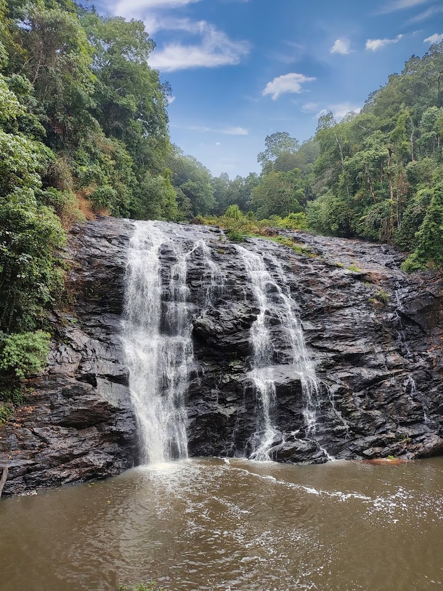A breathtaking waterfall near Madikeri, Abbey Falls is surrounded by lush greenery and coffee plantations. The falls cascade from a height of about 70 feet, creating a mesmerizing sight, especially during the monsoon season. A hanging bridge offers a perfect viewpoint for visitors.
Raja's Seat

A famous viewpoint in Madikeri, Raja’s Seat offers panoramic views of mist-covered hills and valleys. It was once a favorite spot of Kodagu kings. The well-maintained garden, musical fountain, and golden sunsets make it a must-visit.
Madikeri Fort

Built in the 17th century, Madikeri Fort stands as a symbol of Coorg’s history. It houses a palace, a museum, a church, and two elephants at the entrance. The fort provides insights into the region's past with its unique blend of architectural styles.
Omkareshwara Temple
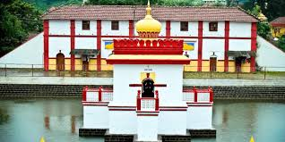AThis 19th-century temple, dedicated to Lord Shiva, showcases a mix of Gothic and Islamic architecture. Built by King Lingarajendra II, it features a water tank with a central dome, adding to its serene ambiance.
Mandalpatti
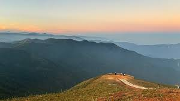An offbeat hilltop destination, Mandalpatti is known for its stunning sunrise and sunset views. Located within Pushpagiri Wildlife Sanctuary, the spot is accessible via a thrilling jeep ride, making it an adventure lover’s paradise.
Dubare Elephant Camp
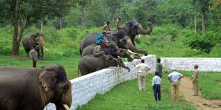A must-visit for wildlife enthusiasts, Dubare Elephant Camp allows visitors to interact with elephants, watch their training sessions, and even bathe them. The camp, located along the Kaveri River, also offers river rafting experiences.
Nisargadhama
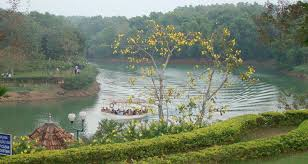A picturesque river island on the Kaveri, Nisargadhama is famous for its hanging bridge, deer park, and bamboo groves. It is an ideal picnic spot for nature lovers, offering activities like boating and elephant rides.
Talakaveri
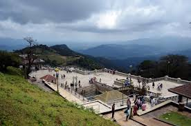Talakaveri is the sacred origin of the Kaveri River, located on Brahmagiri Hills. Nearby, Bhagamandala is known for its temple complex where the rivers Kaveri, Kanike, and Sujyothi converge, making it a significant pilgrimage site.
Bhagamandala
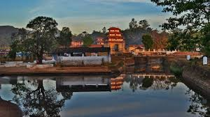A holy pilgrimage site where three rivers meet. Offers a serene spiritual experience.
Iruppu Falls
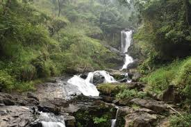A magnificent waterfall nestled in the Brahmagiri Range, Iruppu Falls is a famous trekking destination and a pilgrimage spot linked to Lord Rama. The falls offer a refreshing escape with their scenic beauty.
Harangi Dam
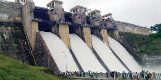A serene location near Kushalnagar, Harangi Dam is built across the Harangi River, a tributary of the Kaveri. The reservoir and surrounding greenery make it an excellent picnic spot.
Gaddige
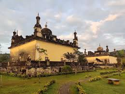A set of Indo-Islamic-style tombs built in memory of Kodava kings and generals. The structure features domes, minarets, and a peaceful garden, making it a great place to explore history.
Chiklihole Dam
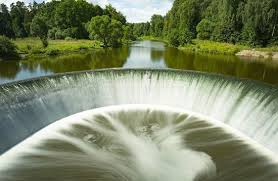A hidden gem near Kushalnagar, Chiklihole Reservoir is a peaceful retreat with a stunning semi-circular dam. It’s a great place for a quiet getaway, especially during sunrise or sunset.